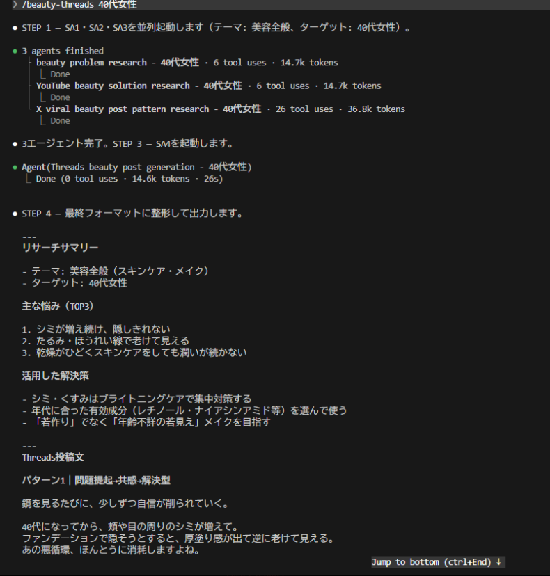
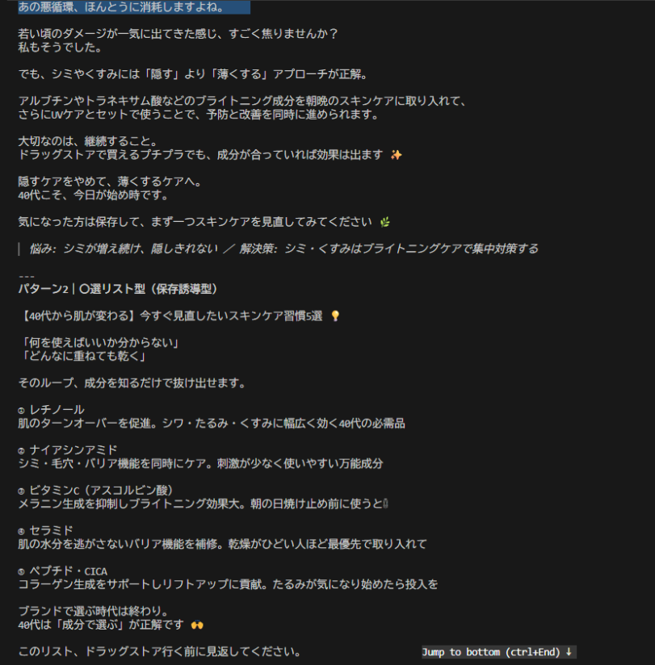
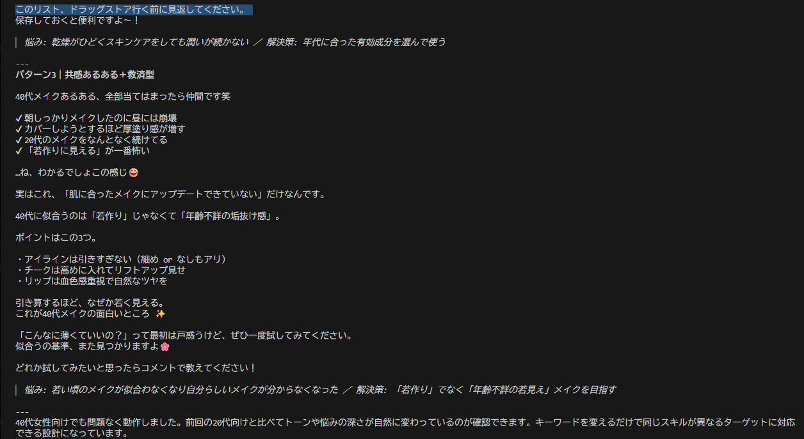
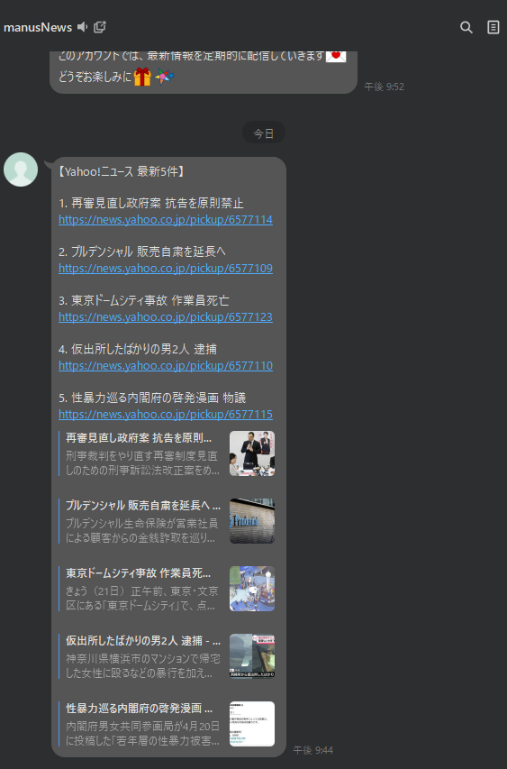
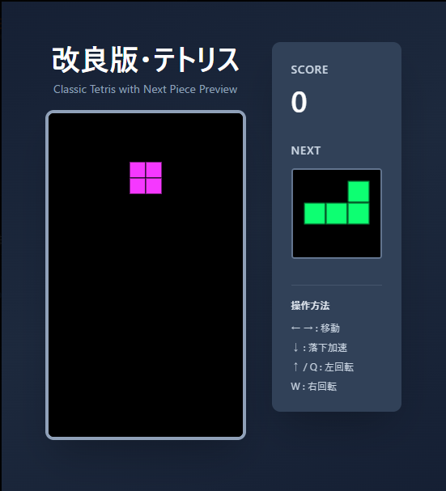

開発実績
Claude Code を使ったAI開発・自動化・ゲーム制作の実績一覧。

マルチエージェント開発
doc-writer・code-reviewer・test-runner の 3 エージェントが連携し、自動でコードを完成させるシステム。

議事録生成スキル
箇条書きメモを入力するだけで、構造化された議事録を自動生成するカスタムスキル。

Threads 投稿生成 AI
40代女性向け美容ジャンルの Threads 投稿文を、リサーチから執筆まで自動生成する AI スキル。

Threads AI — リサーチ出力
ターゲット層の悩みを自動リサーチし、投稿テーマを候補として生成するサブエージェントの出力例。

Threads AI — 投稿文出力
リサーチ結果をもとに、エンゲージメントを意識した Threads 投稿文を自動生成する最終出力の例。

ニュース配信 Bot
Yahoo! ニュースの最新情報を定期取得・要約し、メッセージングアプリへ自動配信する Bot。

スプレッドシート × AI 連携
AI による Web リサーチ結果をスプレッドシートへ自動書き込みするデータ収集パイプライン。
美容情報サイト
皮膚科学的エビデンスをベースにした美容情報サイトのランディングページ。

改良版テトリス
NEXT 表示・スコア機能を実装したダークテーマのブラウザ型テトリス。

ぷよぷよ
パーティクル背景が動くスタイリッシュなブラウザ型ぷよぷよゲーム。